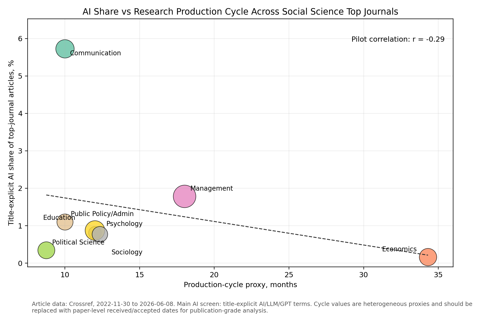
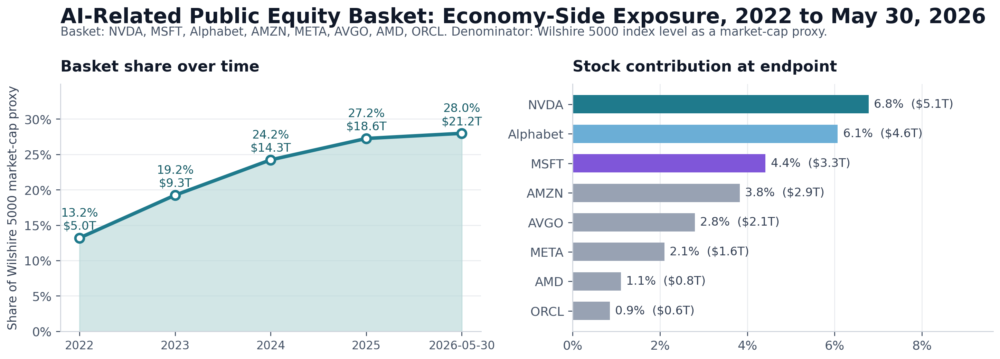

AI Governance and Social Science
Fast AI, Slow Social Science
Why social science struggles to study an object that is still moving.
1. Where Are the Economists?
Why is Anthropic's Dario Amodei often more visible in public debates about AI and the labor market than economists such as David Autor or Daron Acemoglu, who have spent decades studying technological change and work? Why does a question that seems tailor-made for economics and social science still look slow to enter the surface of formal academic knowledge?
The starting point is simple: AI governance clearly needs economics and social science. AI is not just entering technical systems. It is entering labor markets, schools, firms, research organizations, information environments, and political institutions. Governance therefore cannot stop at the model. It has to ask how AI changes incentives, tasks, organizations, markets, institutions, and political power.
Economists and other social scientists are well suited to study these questions. They know how to think about labor markets, technological change, and institutional design. The problem is not that nobody understands these things. The problem is that AI is changing too quickly, while social science is usually better at studying objects that have already become relatively stable.
AI exposes a timing mismatch. Formal publication and career rewards in social science require conclusions that can stand the test of time. But what AI governance most needs to understand is often a set of social structures that are still moving.
So the question is not whether AI governance needs economics and social science. It clearly does. The real question is why the academic system of economics and social science has such difficulty quickly producing and rewarding the kind of knowledge AI governance most needs.
2. Slow, but Good
What social science usually cares about is not only whether a result holds where it was found. It also cares whether the result can travel elsewhere and remain useful. This property is called transportability. If an estimate can only explain one experiment, one city, or one firm, it is hard for it to become cumulative knowledge. It looks more like a local record.
Transportability has at least two dimensions. One is spatial: can this result travel from the original place, population, or institution to another setting? The other is temporal: several years later, is the social mechanism behind the result still there? The second dimension matters especially because a study often takes a long time to move from idea, to data, to working paper, to formal publication.
Hadavand, Hamermesh, and Wilson find that, in their 2020 sample of four Top Five economics journals plus REStat, the average time from submission to acceptance was 26.38 months, and the average time from submission to publication was 34.31 months. This does not include the time from idea to working paper, or from working paper to first submission. Once those stages are included, a study often takes close to three or four years from beginning to formal publication.
A study therefore needs more than internal validity. It also needs a structural shelf life: how far can the result travel across space, and how long can it continue to describe the same object over time?
Take a simple example. Many public services are valuable, but people do not automatically use them. An RCT on vaccination or preventive health care might find that small incentives, reminders, or lower waiting costs substantially increase take-up. The transportable lesson is not merely that "vaccination rose in this village." It is a more general mechanism: when the main barriers are procrastination, travel, and small costs, reducing friction can change behavior.
This is why slow research has worked in the past. Social science and economics often study high-stakes policy questions. Moving slowly can mean more peer review, more revision, and more robustness checks. As long as the object of study has not turned into something else during those years, slowness is not a flaw. It is a form of quality control.
This cycle used to be tolerable because many research objects did not change that quickly. Education, taxes, families, and health policy certainly change, but they usually do not rewrite their basic mechanisms within three or four years. By the time a paper is published, the result can still have policy meaning, and other research can still build on it.
So slowness itself is not the problem. Slow research works under one condition: the object of study remains roughly the same object during the research cycle. If that condition holds, slowness can increase reliability. If it fails, slowness makes conclusions expire.
3. AI Arrives Too Fast
The previous section argued that slow research works when the object remains broadly stable during the research cycle. The trouble with AI is that it is shortening this structural shelf life.
METR surveyed 349 technical workers, including 87 software engineers, between February and April 2026. Looking back from March 2025 to March 2026, respondents reported that the value uplift from AI tools rose from about 1.3x to about 2x; by March 2026, the median reported speed uplift was about 3x. These are self-reports, so they should not be treated as direct estimates of true productivity effects. But they suggest that, at least in technical work, the object of study has already changed over a short period.
By "fast variable," I do not simply mean a variable that changes quickly. I mean that the object of study may become a different object before the paper is finished. Model capability can change. Product form can change. Organizational adoption can change. The task itself can change. In that situation, a study is not merely estimating an effect size. It is estimating a moving social object.
This is the difference between slow-variable domains and fast-variable domains. Slow-variable domains change too, but they usually do not rewrite their core mechanisms within a single research cycle. In fast-variable domains, treatment, outcome, population, and mechanism can all move at once.
| Dimension | Slow-variable domains | Fast-variable domains |
|---|---|---|
| Structural pace | Mechanisms and response functions remain relatively stable. | Treatment, outcome, population, and mechanism may change within the research cycle. |
| What slow research does | Peer review, revision, and robustness checks can make conclusions stronger. | A very solid paper may describe an object that has already changed. |
| Structural shelf life | Longer validity across space and time. | Shorter and more uncertain validity. |
| Examples | Family structure, tax systems, parts of health policy. | AI labor, platform rules, information environments, software engineering, digital markets. |
There is an important caveat: AI may not always remain a fast variable. It may turn out to be closer to a one-time technological shock. In "Economics and Transformative AI", Tom Cunningham notes that economists such as Acemoglu often treat AI as a diffusion process: like electricity or the steam engine, it arrives, firms gradually adopt and adjust to it, and the economy eventually approaches a new steady state.
This is a very economic way of seeing the problem. If it is right, AI research perhaps should not chase short-term changes during the most chaotic phase. It should wait until the object is closer to a steady state, and then study its effects on labor, education, organizations, and markets. Otherwise, many changes during the transition may be temporary adjustments rather than stable mechanisms.
Many people in AI do not see it this way. They worry that model capabilities are still rising quickly, and that no one knows where the ceiling is. If capability is still changing and organizational adoption is still changing, then AI is not a one-time shock. It is a variable that keeps changing the object of study. The rest of this essay depends on that judgment, but the judgment could be wrong.
AI creates a second problem as well: it does not only change quickly itself. It may also make other domains faster. Once AI enters firms, education, health care, research, and capital markets, it can change the division of labor, returns to skill, organizational structure, and knowledge production. A study of AI coding assistants may look like it is estimating the effect of a tool on programmer productivity. But AI may also be changing what "programmer productivity" means as an outcome variable.
Three years later, the coefficient may change. But the deeper problem is that the treatment effect may no longer describe the same social object.
4. Why Do Formal Papers Look Behind?
If AI is a fast variable, the next question is whether the formal publication system can absorb it in time. I use a very narrow metric: from the release of ChatGPT to June 8, 2026, how many articles in the traditional Top Five economics journals explicitly mention AI, generative AI, LLM, GPT, or ChatGPT in the title? This is a conservative metric, not a literature review. It only asks how visible AI is on the surface of formal top-journal articles.
| Window | Articles | Title-explicit AI articles | Share |
|---|---|---|---|
| 2022-11-30 to 2026-06-08 | 1,830 | 3 | 0.16% |

This pattern is not only visible inside economics. Across several social science fields, a similar relationship appears: fields with shorter publication cycles tend to have a higher share of title-explicit AI articles, while fields with longer publication cycles show AI more slowly on the surface of formal articles. This comparison is not a causal estimate. But it suggests that the problem is not simply that one economics journal is slow. There may be a systematic mismatch between knowledge-production cycles and fast-moving research objects.1
The number is tiny: out of 1,830 articles, only 3 had titles that explicitly referred to AI. They are Beraja, Kao, Yang, and Yuchtman's "AI-tocracy", Brynjolfsson, Li, and Raymond's "Generative AI at Work", and Ide and Talamas's "Artificial Intelligence in the Knowledge Economy". Among these, only "Generative AI at Work" is an empirical paper about a generative-AI workplace deployment. But the rollout it studies took place in fall 2020 and winter 2021, one to two years before ChatGPT was released, and the article was published online in QJE in February 2025.
This does not mean economics is not studying AI. It means something narrower: AI is already visible on the economic side, but it is entering the surface of formal papers much more slowly. A conservative public-equity basket with AI exposure, including NVIDIA, Microsoft, Alphabet, Amazon, Meta, Broadcom, AMD, and Oracle, rose from about 13 percent of a Wilshire 5000 market proxy at the end of 2022 to about 28 percent by the May 30, 2026 endpoint.2 Stock prices do not prove the true productivity impact of AI. They only show that capital markets have already repriced AI as an important variable.
More precisely: AI has already become a salient variable in the economy, but it has not entered the most formal, cumulative layer of economics at the same speed.

5. Incentive Misalignment
At the surface, one might say: academia is too slow, AI is too fast. But the deeper problem is not speed itself. It is incentive misalignment.
Formal publication rewards conclusions that can survive review, revision, and comparison with the literature. That system makes sense. It pushes researchers toward more stable objects, because stable objects are easier to evaluate and easier for later research to build on.
But much of the knowledge AI governance needs appears before the structure has stabilized. A researcher might spend three years studying how AI changes a certain kind of work. By the time the paper is published, model capability, product form, and organizational use may all have changed. The conclusion does not become invalid because the research was careless. It becomes dated because the object itself has moved.
This is the mismatch: the changes society most needs to understand are not necessarily the changes that most easily become papers, citations, jobs, and prestige. The more cautious researchers are, the more likely they are to wait until the object stabilizes. But policy judgment often cannot wait until after stabilization.
In fast-variable domains, a study therefore cannot only report "what effect AI has on some outcome." It also has to say under what conditions the result holds: what model was used, what adoption environment it was in, whether the task structure changed, and what changes would make the conclusion obsolete.
The answer is not to ask economics and social science to abandon slow research. Slow research remains important. The point is that fast-variable domains need a complementary evidence format:
- Report estimates together with model capability, adoption environment, and organizational structure.
- State the temporal shelf life and spatial scope of the result.
- Explain which capability changes, product changes, or institutional changes would make the result obsolete.
- Treat mechanism records, living reviews, and policy memos as part of cumulative knowledge, not merely as materials that have not yet become papers.
Seen this way, AI governance does not merely challenge social science to "publish faster." The real question is: when the object of study itself is moving, how can social science produce knowledge that is both rigorous and timely enough to enter decisions?
Notes
- At least two effects are mixed here. The first is a publication-cycle effect: the shorter the cycle, the sooner new post-ChatGPT topics can appear on the surface of formal articles. The second is a field-selection effect: different disciplines naturally absorb a research object such as AI at different speeds. If the window were extended to the past five or ten years, these two effects would be mixed together, and the relationship in the figure could weaken, change shape, or even look different in some fields.
- Sources and method: Hadavand, Hamermesh, and Wilson report 26.38 months from submission to acceptance and 34.31 months from submission to publication for four Top Five economics journals plus REStat. Top Five article counts are a preliminary Crossref metadata screen from November 30, 2022 to June 8, 2026, using a conservative title-level AI keyword screen. The social science figure is an experimental Crossref diagnostic using heterogeneous production-cycle proxies. The public-equity basket is a broad, judgment-based AI-exposed mega-cap technology basket, not a pure-play AI revenue measure. The figure uses StockAnalysis historical market-cap pages, Yahoo Finance chart data, and the Wilshire 5000 index level as a U.S. market-cap proxy; for 2026, basket market caps are approximated by scaling 2025 year-end market caps by Yahoo Finance close-price ratios through May 29, 2026. METR data come from the May 2026 usage survey, "Measuring the Self-Reported Impact of Early-2026 AI on Technical Worker Productivity".